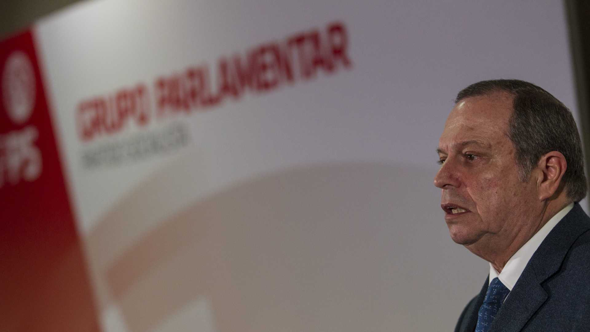

O presidente do PS, Carlos César, considerou hoje que a saída do Reino Unido da União Europeia representa "um cartão amarelo" e defendeu urgência na adoção de reformas contra o crescimento de populismos autoritários na Europa.
Estes avisos foram deixados por Carlos César no discurso de encerramento das Jornadas Parlamentares do PS, que decorreram em Portimão.
Na sua intervenção, o líder da bancada socialista referiu-se ao acordo hoje alcançado entre os Estados-membros para a saída do Reino Unido da União Europeia, dizendo que este processo foi "complexo" e gerador de "perplexidades".
"Considerando embora o distanciamento tradicional e histórico do Reino Unidos em relação ao projeto europeu, saliento, no entanto, que a situação que vivemos é um sinal amarelo para a União Europeia e não é motivo de satisfação".
"É um motivo de interrogação sobre este projeto" completou.
De acordo com o presidente do PS, "não se pode ignorar que hoje o populismo autoritário e eurocético é atualmente a terceira força mais poderosa no contexto eleitoral europeu".
"Na reflexão que se impõe fazer, temos de nos interrogar sobre situações tão diversas como a legitimidade das decisões e modelos de decisão da União Europeia", sustentou.
Ainda de acordo com Carlos César, é preciso uma reflexão "sobre o espaço cada vez mais exíguo que, por força da globalização, é dado às identidades regionais ou nacionais".
"Temos de nos interrogar sobre em quanto contribui a crise do Estado social europeu para a fragilização deste projeto europeu. Temos de ter em consideração as desigualdades entre pessoas e territórios", acrescentou.